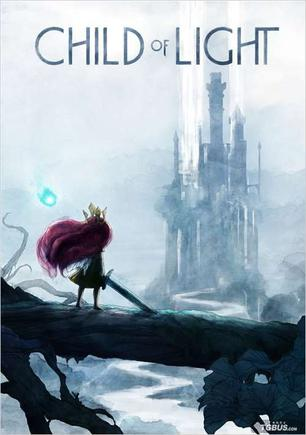
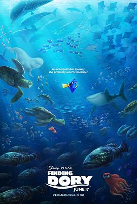
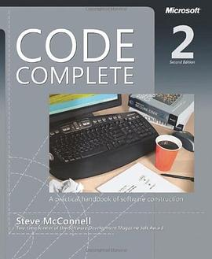
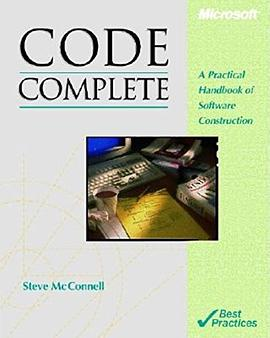
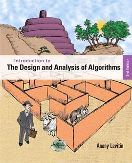
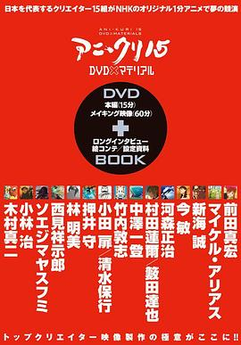
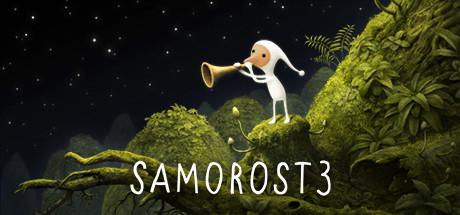
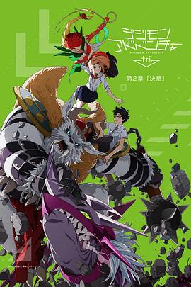
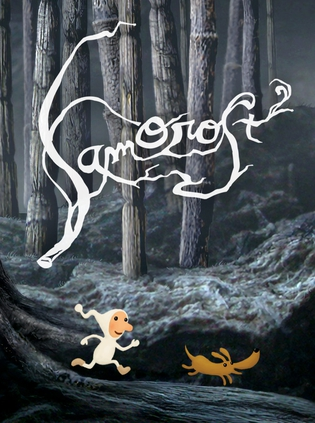
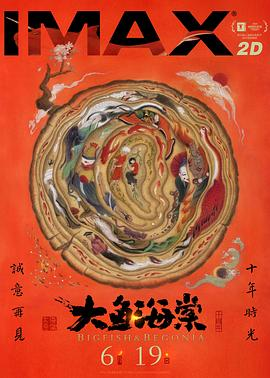

2016-11-28 18:30:26
豆瓣原页
看过 神奇动物在哪里 / Fantastic Beasts and Where to Find Them ★★★★★
Palace Nova 的ExImaz厅，这个是普通厅的片源放到IMAX屏上的，挺不错～首先音乐满分，然后其次特效很不错，然后英文一般听不懂哈哈哈哈哈，一定得看一下中文版，顺便，片尾没彩蛋
2016-11-21 18:19:58
豆瓣原页
想玩 看门狗2 Watch_Dogs 2
第一次剁手入正Gold版，这种专业相关的游戏真是没有抵抗力啊！！！
2016-11-21 18:09:15
豆瓣原页
玩过 极限巅峰 Steep ★★★★☆
滑翔伞看起来好好玩啊，但是好难控制，完全依赖于上升气流 sigh 目前玩的是open beta，bug还蛮多的 sigh 然后就是从一个点跑到另一个点真的好废时间啊，跑路有种魔兽世界的感觉
2016-11-21 18:05:56
豆瓣原页

玩过 光之子 Child of Light ★★★★★
画面和音乐都很有爱~ 回合制但是引入了child of light就很有趣了，可以在治疗和减速之间选一个，晚饭比一般的回合制有趣些~
2016-11-14 19:58:25
豆瓣原页

看过 海底总动员2：多莉去哪儿 / Finding Dory ★★★★☆
很不错的电影啊，后天就要考Machine Learning了，我还在开小差 XD 电影不错，画面做的特别棒！章鱼也很搞笑，片尾也有彩蛋XD 但是美中不足的就是剧情比较简单，虽然各种搞笑元素也都有，但是综合一下还是8.5吧
2016-11-11 09:34:32
豆瓣原页
 看过 黑镜 第三季 / Black Mirror Season 3 ★★★★★
看过 黑镜 第三季 / Black Mirror Season 3 ★★★★★
真是过瘾，虽然前面的节奏有点乱，但是最后一集那种世界被科技毁灭而且束手无策的感觉真是细思恐极 :D
2016-11-10 21:14:06
豆瓣原页
看过 美丽人生 / La vita è bella ★★★★★
“This is the sacrifice my father made. This was his gift to me.” 难得的好片！本以为是大团圆结局，原来还是有牺牲。有了牺牲，故事才更壮烈、更传奇。贯穿全片的舞曲也好听啊~ 前60%剧情也是特别有趣 :D 真…
2016-11-09 18:12:11
豆瓣原页
喜欢 Medium
相见恨晚啊，国际版的“简书”！
2016-11-08 21:16:30
豆瓣原页
喜欢日记 电影情书「Love Letter」圣地巡礼指南－…
2016-11-03 20:41:34
豆瓣原页
玩过 席德·梅尔的文明VI Sid Meier’s Civilization VI ★★★★★
BGM太好听！战棋的模式也很耐玩，然后就是可玩性太高了！不建议入坑，打开第一次肯定是在5小时以上 orz
2016-10-22 19:18:43
豆瓣原页
在看 黑镜 第三季 / Black Mirror Season 3
2016-10-10 20:00:50
豆瓣原页

在读 Code Complete ★★★★★
这书竟然有第二版了 =。= 好不容易借到第一版的说
2016-10-10 19:40:04
豆瓣原页

在读 Code Complete ★★★★★
久负盛誉，在图书馆借到了，果断来读读
2016-10-10 19:37:05
豆瓣原页

读过 Introduction to the Design and Analysis of Algorithms ★★★★☆
我的算法知识太散了 =。= 什么都知道一点什么都，而且越发感觉吃考研复习时的老本了，有空的话还是多读读《算导》好了，这书说的也挺好，但是看英文版的感觉不是那么清晰 _(:з」∠)_
2016-10-10 19:32:47
豆瓣原页
在读 Introduction to the Design and Analysis of Algorithms ★★★★☆
我的算法知识太散了 =。= 什么都知道一点什么都，而且越发感觉吃考研复习时的老本了，有空的话还是多读读《算导》好了，这书说的也挺好，但是看英文版的感觉不是那么清晰 _(:з」∠)_
2016-10-10 07:27:06
豆瓣原页
看过 甜甜私房猫：吃饱饱大冒险 / チーズスイートホーム ★★★☆☆
3D做的真的太差啦，2D的话5星，3D做得好的话5星，做的不好3星。猫这么萌的生物怎么这么光滑！！！而且太反重力了 =。=
2016-10-08 18:23:16
豆瓣原页
看过 独立日2：卷土重来 / Independence Day: Resurgence ★★★★☆
很过瘾，就是广告太多了:P 期待独立日3：地球反击战
2016-10-02 22:33:28
豆瓣原页
看过 吹响悠风号剧场版：欢迎来到北宇治高中吹奏乐部 / 劇場版 響け！ユーフォニアム～北宇治高校吹奏楽部へようこそ～ ★★★★★
虽然是总集篇，但是开篇的《地狱的奥路菲》真是紧紧地抓住了我，选的交响乐，对于我这样的前奏控妥妥地一本满足 :P 还是那么地燃，剧场版的3D运镜果断是经费充足啊，效果特别棒
2016-09-30 10:11:28
豆瓣原页

看过 15名动画人 / アニ＊クリ15 ★★★★★
今敏的画风太好认了，可惜英年早逝；全部15部短片，真的就是新海诚的最有趣，画面也是很温馨，台词设计的也很细腻 _(:з」∠)_ 英崔斯听
2016-09-29 02:39:21
豆瓣原页
看过 天空之眼 / Eye in the Sky ★★★★☆
不难看，但是真实性无从而知。最后一句话很有感觉：Never tell a soldier that he does not know the cost of a war!
2016-09-27 18:47:06
豆瓣原页
看过 选帝侯大街56 / Ku’damm 56 ★★★★★
真是一部难得的好剧，也是第一次看德剧。一开场就给我留下了很多疑问（后来发现是插序），从最开始的羞耻感到后面的目瞪口呆，真是大快朵颐，人物的心理、微表情、微动作真是表现得淋漓尽致，台词设计的也是很注意细节的刻画，感谢D同学推荐 :P 相遇选帝侯大街59年~
2016-09-27 18:41:16
豆瓣原页
想看 选帝候大街59年 Ku’damm 59 (2017)
2016-09-25 19:18:00
豆瓣原页
看过 Rewrite / Rewrite リライト ★★★★☆
Excuse me??? 能长一点吗！我怎么想到了《Charlotte》
2016-09-21 19:01:44
豆瓣原页
看过 她和她的猫 / 彼女と彼女の猫 -Everything Flows- ★★★★☆
画面很美，没有什么故事性（和《君の名。》相比哈哈哈）
2016-09-20 13:06:05
豆瓣原页
看过 Re：从零开始的异世界生活 ★★★☆☆
艾米莉亚，丢你雷姆哦！我感觉我已经不适合这种类型的动漫了 =。= 7分
2016-09-18 23:53:59
豆瓣原页

玩过 银河历险记 3 Samorost 3 ★★★★★
Mid-break 玩通关了，真不错
2016-09-17 10:07:30
豆瓣原页

看过 数码宝贝大冒险tri. 第2章：决意 / デジモンアドベンチャー tri. 第2章 決意 ★★★☆☆
发现很多都记不起来了，动画节奏也是太慢，主角还是那么幼稚（苦笑；情怀3分、剧情0分；究极进化有点意思，不过蔷薇兽迷之卖肉是什么意思？后面4集就不追了，童年回忆就封存起来好了。前天还有一个印度小伙问我看不看Naruto，我说看的不多然后又问他还看什么动漫？他说DigiMo…
2016-09-16 19:32:46
豆瓣原页
看过 釜山行 / 부산행 ★★★★★
问韩国哥们你们国家有什么好看电影吗？于是就被推荐这部，真心好看！故事性很强，人性刻画也很棒！看完不舍得关。
2016-09-15 23:31:06
豆瓣原页
看过 数码宝贝大冒险tri. 第1章：再会 / デジモンアドベンチャー tri. 第1章 再会 ★★★☆☆
excuse me??? 节奏太慢，相比于刚看过的《你的名字。》，这动画只能拿1星，作画也崩得很，内容也是特别乏味，情怀值2分。
2016-09-10 23:07:08
豆瓣原页
想看 你的名字。 / 君の名は。
唯一一部能看360P画质还能流泪的动画，真的好好看好好看好好看！！！大量的3D运镜，故事也是波澜起伏开放式结局，搞笑与温馨并存，等放1080P了一定要再看一遍！（由于土澳网卡，有史以来唯一一次开流量看视频）
2016-09-10 20:04:25
豆瓣原页

玩过 银河历险记2 Samorost 2 ★★★★☆
05年的佳作，Flash做的，比第一部增加了很多可玩性，很短的游戏，但是最后一关真心是坑人啊 =。=
2016-09-03 17:01:58
豆瓣原页
看过 爱宠大机密 / The Secret Life of Pets ★★★★★
美队看完发现这个也下完了，顺便看掉了XD 太赞了这剧，而且三观还是那么地正！
2016-09-03 15:09:57
豆瓣原页
看过 美国队长3 / Captain America: Civil War ★★★☆☆
好吧，放着机器学习不看，看了2个半小时这个，简直了 orz 从头到尾没有什么精彩的地方啊，本来以为最后半个小时要高潮了，就3个人在那打来打去，实在是挺失望啊。
2016-08-27 19:22:23
豆瓣原页
看过 超验骇客 / Transcendence ★★★★★
直到看完我还以为女主是斯嘉丽！！然后刚开始就看到了纸牌屋第一季里面的Zeo，真是久违。电影的设定令人拍案叫绝，看完之后现在来写支持向量机（几十年前的人工智能方法）的作业，看来我离现代人工智能还有很长的一段路要走啊 orz
2016-08-14 11:17:46
豆瓣原页

看过 大鱼海棠 ★★★★☆
哎，上映的时候我已经到了没法6.6元看电影的国家，于是只能看TS了，残念。看了之后嘛，画面5星，剧情3星，均分4星。剧情主要槽（智障）点：年轻人啊怎么不知道珍惜生命，还有，想还别人生命，结果到头来还是欠别人；-你对我就和哥哥一样好 -唔，好吧。那就这样了，感觉剧情（或者…
2016-08-13 13:45:13
豆瓣原页
玩过 救世之树 Tree of Savior ★★★★☆
画风很不错，然后就是这个游戏的逻辑是，先做动作再与服务器通信，这个太吃网速了，应该在做动作的时候就与服务器通信，这样会比较流畅。。
2016-08-07 14:04:36
豆瓣原页
喜欢日记 你知道冰箱里面的食物放多久吗？